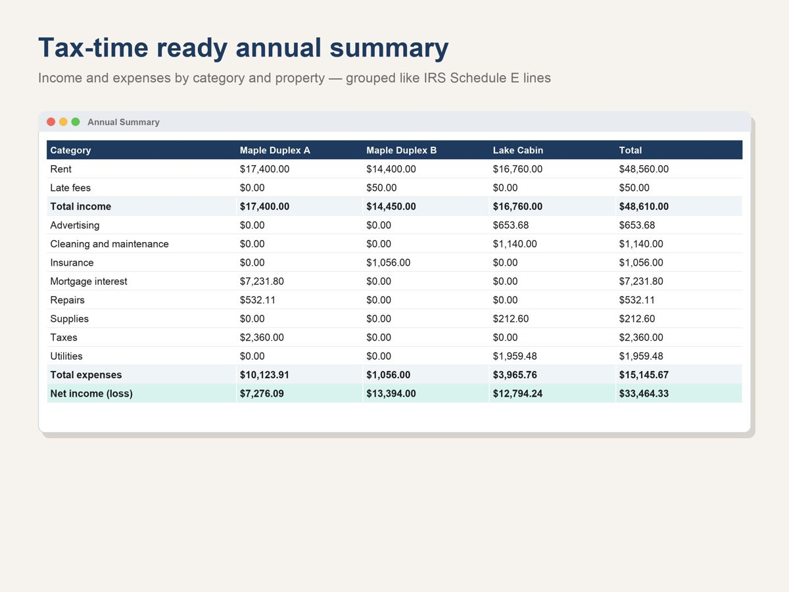
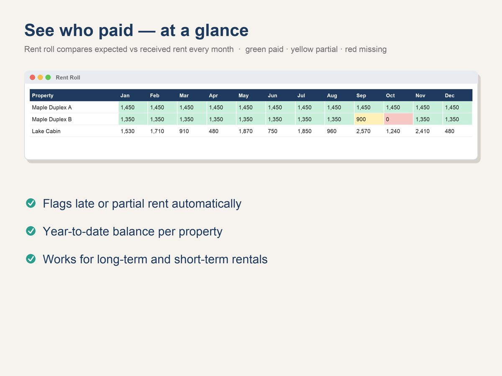
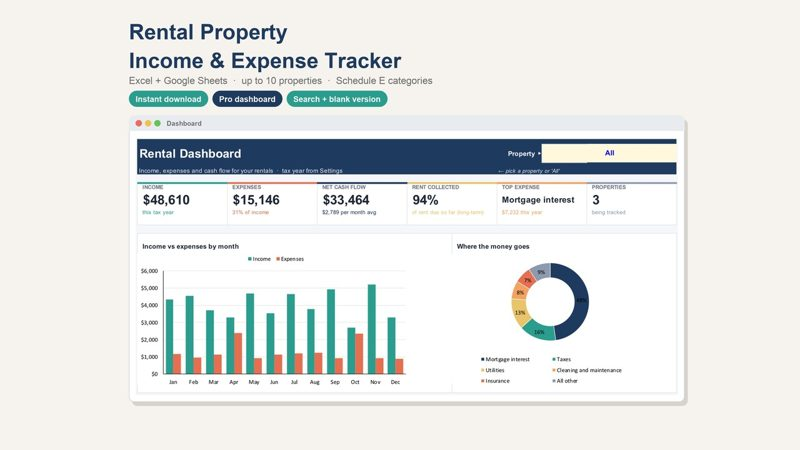
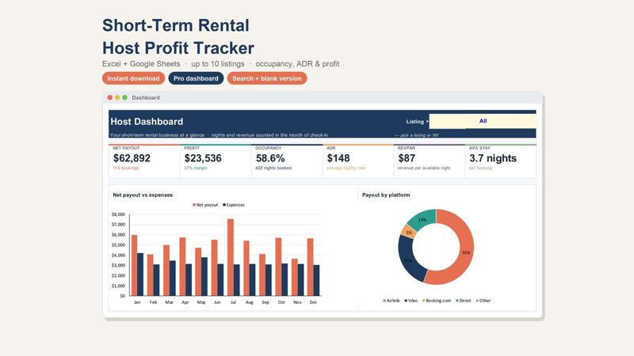

How to Track Rental Property Income and Expenses (A Simple System)
Most landlords don't lose money on paperwork because they're careless — they lose it because receipts live in five places and rent is checked from memory. A simple system fixes that. Here is the one we recommend, whether you own one unit or ten.
1. Keep one transaction log for everything
Every dollar in or out goes into a single list with the same five columns: date, property, category, amount and a short note (who you paid, or who paid you). One list beats one spreadsheet per property: it's faster to fill in and every report can be built from it.
2. Use fixed categories from day one
Pick your categories once and never improvise new ones. A good starting set for a long-term rental: rent received, late fees, advertising, cleaning and maintenance, insurance, legal and professional fees, management fees, mortgage interest, repairs, supplies, property taxes, utilities and travel.
In the US, rental income and expenses are reported on Schedule E (Form 1040), which the IRS describes as the form to report income or loss from rental real estate. Grouping your categories the same way makes tax time much faster. (This is general information, not tax advice — check the details with a tax professional.)

3. Check rent with a rent roll, not your memory
A rent roll is a simple grid: one row per unit, one column per month, showing expected vs. received. Partial and missing payments stand out immediately, and you can follow up in days instead of weeks.

4. Close each month in 15 minutes
- Log anything you missed from bank and card statements.
- Save receipts in one folder per year, named by date and vendor.
- Look at net cash flow per property — is any unit drifting into the red?
5. At year end, export one summary
If steps 1–4 are done, the year-end summary is just a filter: totals by property and category. That page, plus your receipts folder, is what your tax preparer needs.
Want this system ready-made? Our rental templates do steps 1–5 automatically in Excel or Google Sheets:

Rental Property Income & Expense Tracker
Every property's rent and expenses in one automatic spreadsheet, with a rent roll and a year-end summary.
See it on Gumroad →
Short-Term Rental Host Tracker
Occupancy, nightly rate, expenses and real profit for each short-term rental listing.
See it on Gumroad →General information only, not financial, tax or legal advice.